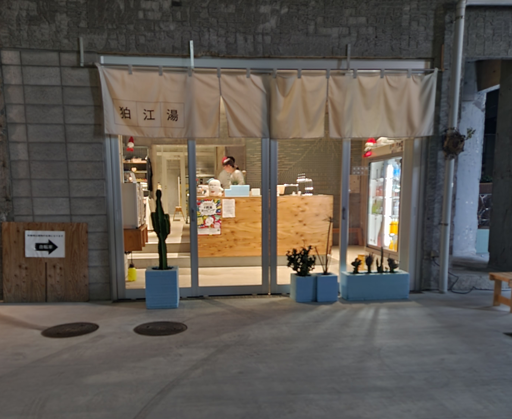

サウナの好きポイント
サウナは究極のリラクゼーションを味わえます。これがサウナの最大の魅力です。具体的には、リラックス効果、健康への良い影響、そして多様な体験が挙げられます。 サウナは、日本全国の様々な場所で楽しむことができます。高温で汗をかくことにより、疲れた心と体を癒し、ストレスを軽減することができます。また、サウナは血行を良くし、疲労回復にも効果的です。全国には様々な種類のサウナがあり、それぞれに独特の特徴があります。伝統的な日本式サウナから、最新のトレンドを取り入れた斬新なサウナまで、あらゆる種類を体験することが楽しみの一つです。
サウナの健康効果
高温により血流が促進され、疲労回復とストレス解消に効果的です。低温サウナは安眠に役立ち、サウナ全般で血圧低下、肩こりや筋肉痛の改善が見込まれます。また、サウナ後は健康な皮膚状態を促進し、心臓機能と自律神経を強化します。
おすすめサウナ - 狛江湯
狛江駅近くにある狛江湯は、向ヶ丘遊園から２駅で、大学から最短距離の本格サウナです。
